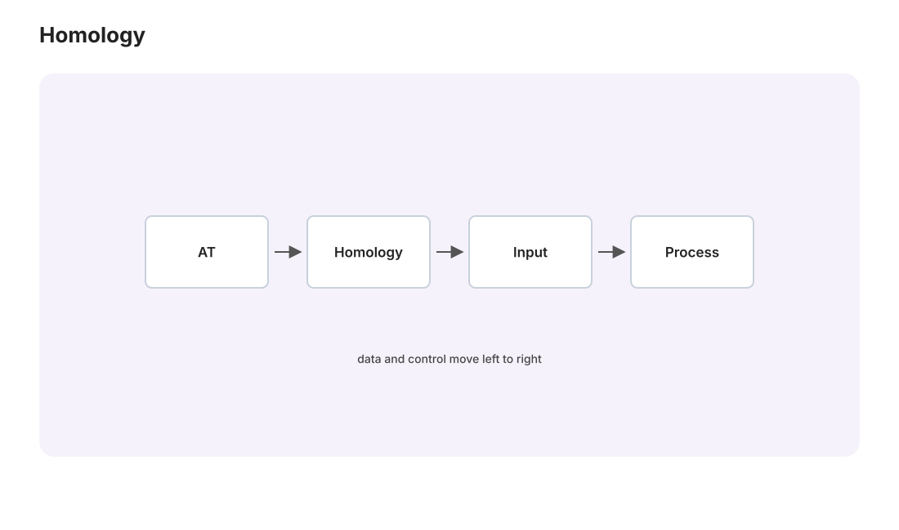

代数拓扑 III · 同调
对标：Hatcher §2.1–2.2 ｜ 前置：at-01/02、高代 IV（商空间）、mfld-02（de Rham 预告） 基本群只测一维洞且可非交换难算；同调用交换群把"所有维度的洞"一次测完，且可机械计算（线性代数！）。本页从单纯同调的手算入门，到公理化的红利（Brouwer 高维版、Euler 示性数的统一），代数拓扑三页收官。

1. 单纯同调：数洞的线性代数
装置：空间三角剖分成单纯形（点/边/三角/四面体…）；链群 \(C_k\) = \(k\)-单纯形的形式整系数组合（自由交换群——高代 IV 的直和）；边界算子 \(\partial_k: C_k \to C_{k-1}\)：
（交替符号给定向——mfld-02 楔积反对称的离散亲戚。）
引理（\(\partial^2 = 0\)）【证明】 两次删点 \((i, j)\) 的项出现两次、符号相反（先删 \(i\) 后删 \(j\) 与反序差一个 \((-1)\)——指标平移一位）——逐项相消。\(\blacksquare\)（与 \(d^2 = 0\)（mfld-02）同一句话："边界没有边界"。）
定义（同调群）
——"围而不填"的 \(k\) 维圈：\(H_0\) 数连通块、\(H_1\) 数环洞、\(H_2\) 数空腔。计算 = 两个整数矩阵的核与像（Smith 标准形——高代的算法性在此变成拓扑的可计算性）。
手算双例（本页的核心练习，务必亲手）： 球面 \(S^2\)（四面体的表面）：\(H_0 = \mathbb{Z}\)，\(H_1 = 0\)（每个圈都是某两面之界），\(H_2 = \mathbb{Z}\)（全体面之和是无边界的"空腔壳"）——一个二维洞； 环面 \(T^2\)（标准方格剖分或用下述工具）：\(H_0 = \mathbb{Z}\)，\(H_1 = \mathbb{Z}^2\)（经线纬线两个独立环洞），\(H_2 = \mathbb{Z}\)——"甜甜圈 = 1 块 + 2 环 + 1 腔"的代数指纹。
2. 公理化视角与工具箱
奇异同调（用连续映射的单纯形替代剖分——对一切空间有定义、同伦不变【引用等价性】）满足 Eilenberg–Steenrod 公理：函子性、同伦不变、长正合列、切除。使用层面两大件：
- Mayer–Vietoris 长正合列（同调版 van Kampen）：\(X = U\cup V\) 时三者同调串成长正合列——分块计算引擎，球面的归纳计算 \(H_k(S^n) = \mathbb{Z}\ (k = 0, n)\) 三行完成【骨架】；
- \(H_1\) = 基本群的交换化（Hurewicz【引用】）：\(H_1 \cong \pi_1^{ab}\)——8 字形 \(\pi_1 = F_2\) 而 \(H_1 = \mathbb{Z}^2\)：同调抹掉非交换信息换取可计算性（分辨率与易算性的交易，本课程分类学主题的又一例）。
3. 三张支票的兑付
① Brouwer 不动点定理（任意维）【证明】 若 \(D^n\) 自映射无不动点 ⇒ 收缩 \(r: D^n \to S^{n-1}\) 存在；函子性：\(\mathbb{Z} = H_{n-1}(S^{n-1})\) 要穿过 \(H_{n-1}(D^n) = 0\)——矛盾。\(\blacksquare\)（at-01 二维版的高维完全体；博弈论/Kakutani 的地基最终版。）
② 维数不变性【证明】 \(\mathbb{R}^m \cong \mathbb{R}^n \Rightarrow\) 去一点后同伦等价于 \(S^{m-1}\) 与 \(S^{n-1}\)，同调不同（\(m \neq n\) 时）——"维数是拓扑不变量"这句显然的话原来需要同调才能证（数分/拓扑多年欠账的最终清偿）。
③ Euler 示性数的统一【定理】 \(\chi = \sum(-1)^k\,\mathrm{rank}\,H_k\)（Betti 数的交替和），且 = 任何剖分的 \(V - E + F - \cdots\)【骨架：秩-零化度定理逐层核算——纯高代】。图论 II 的 \(V - E + F = 2\)、微分几何 II 的 \(\int K\,dA = 2\pi\chi\)、本页的 Betti 数——三门课的 \(\chi\) 是同一个数：全站最大跨度的一次会师。
🔗 现代出口：持续同调（TDA）——让剖分尺度从 0 扫到 ∞、记录每个洞的生灭区间（barcode）："数据的形状"的正式技术（点云的环结构、材料孔隙、脑网络……）；计算全靠本页的矩阵算法——你的数据分析工具箱里有一格属于同调。
4. 代数拓扑三页收官盘点
| 页 | 不变量 | 分辨率 | 可计算性 |
|---|---|---|---|
| I | \(\pi_1\) | 一维洞、非交换全息 | 难（字问题不可判定【引用】） |
| II | 覆盖对应 / van Kampen | 子群层次 | 分治可算 |
| III | \(H_k\) | 全维度、交换化 | 线性代数级 |
"造不变量→函子性→翻译问题"的方法论至此完整示范三轮——它就是二十世纪数学的中央战略（本科站四次点题的"不变量分类"在研究生站的完全体）。
5. 练习与要点
例 1（亲手 Smith 一次） 圆 \(S^1\) 的三角形剖分（3 点 3 边）：写出 \(\partial_1\) 矩阵、算核与像 ⇒ \(H_1 = \mathbb{Z}, H_0 = \mathbb{Z}\)——第一次全手工同调计算（20 分钟，值回票价）。
例 2（Betti 数当指纹） 球面 \((1,0,1)\) vs 环面 \((1,2,1)\)：\(H_1\) 一举分开二者（基本群也能，但同调是"矩阵可算"的）；\(\chi = 2\) vs \(0\) 与 Gauss–Bonnet 对账 ✓。
例 3（M–V 上手） 用 Mayer–Vietoris 算 8 字形的同调（两圆并于一点）：\(H_1 = \mathbb{Z}^2\)——与 \(\pi_1^{ab} = F_2^{ab} = \mathbb{Z}^2\)（Hurewicz）双路核验。\(\blacksquare\)
最后一门：代数进阶——Sylow 定理、Galois 对应全证与五次方程不可解：本科抽代"山顶眺望"的正式登顶。